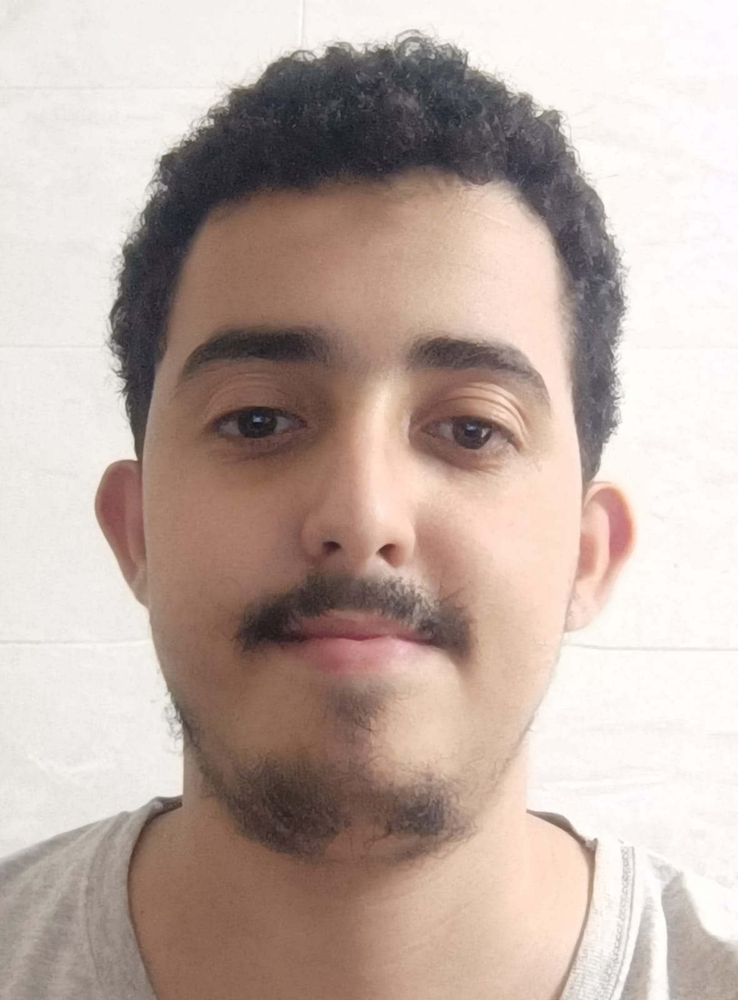

Saad Eddine Abarra

Summary
My name is Saad, and I am a student currently pursuing a degree in
Computer Science. I am passionate about web development and actively
learning HTML, CSS, and JavaScript to build dynamic and responsive
websites. My goal is to leverage my skills and knowledge to contribute to
innovative projects and grow as a web developer.
Education
- Bachelor of Computer Science in Faculté de Sciences et Techniques Tanger
Work Experience
Intern, ABC Web Solutions:
June 2023 - August 2023
- Assisted in the development of a client website using HTML, CSS, and JavaScript.
- Collaborated with senior developers to fix bugs and optimize code.
- Participated in team meetings and contributed ideas for improving user experience.
Web Development Volunteer, Local Non-Profit
January 2023 - May 2023
- Created and maintained the organization’s website, ensuring it was user-friendly and up-to-date.
- Implemented responsive design techniques to enhance mobile accessibility.
- Worked closely with the marketing team to integrate social media and promotional content.
Skills
Technical Skills
- Languages: Proficient in HTML, CSS, JavaScript
- Frameworks and Libraries: Familiar with Bootstrap, jQuery
- Tools: Git, Visual Studio Code, Chrome DevTools
Soft Skills
- Problem-solving: Strong ability to troubleshoot issues and find efficient solutions
- Communication: Excellent verbal and written communication skills
- Teamwork: Proven ability to work collaboratively in team settings
Other
- My Hobbies
- Contact Me